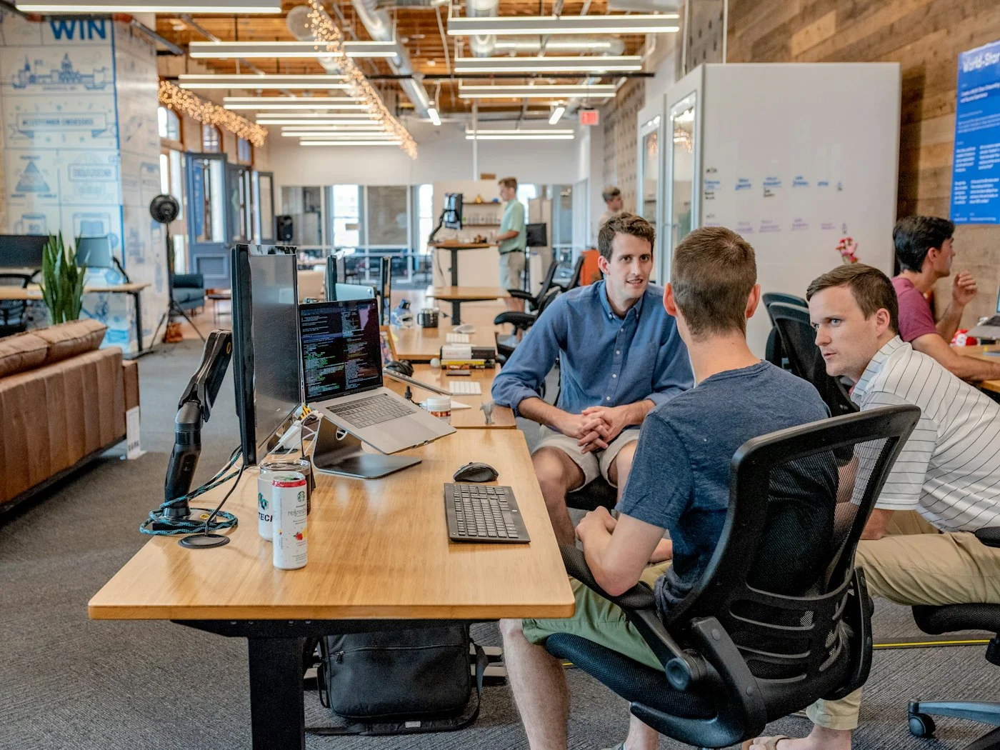

KI im Mittelstand: 5 praktische Einsatzmöglichkeiten

1. Automatische Rechnungsverarbeitung
Das Problem: Buchhaltung tippt Rechnungen manuell ab. Bei 200-500 Rechnungen/Monat sind das 20-30 Stunden.
Die KI-Lösung: System liest Rechnungen automatisch (OCR + KI), extrahiert alle Daten, trägt sie ins Buchhaltungssystem ein.
ROI: Amortisation in 8-12 Monaten. Zeitersparnis: 80%.
2. Intelligente E-Mail-Sortierung
Das Problem: Kundenanfragen landen in einem Postfach. Niemand weiß, wer zuständig ist. Antwortzeiten: 2-3 Tage.
Die KI-Lösung: System liest E-Mails, erkennt Thema und leitet automatisch weiter: Technische Frage → Support, Angebotsanfrage → Vertrieb.
ROI: 60% schnellere Reaktionszeit. Kundenzufriedenheit steigt messbar.
3. Prädiktive Wartung
Das Problem: Maschinen fallen ungeplant aus. Produktionsausfälle kosten Geld.
Die KI-Lösung: Sensordaten werden analysiert. KI erkennt Muster und warnt, bevor etwas kaputt geht.
ROI: 40% weniger ungeplante Ausfälle. Bei produzierenden Unternehmen: Einsparung von 100.000€+/Jahr.
4. Chatbot für Standard-Anfragen
Das Problem: 70% der Kundenanfragen sind Standard: "Wo ist meine Bestellung?", "Wie funktioniert X?"
Die KI-Lösung: Chatbot beantwortet Standard-Fragen 24/7. Komplexe Fragen werden an Menschen weitergeleitet.
ROI: Entlastet Support-Team um 40-60%. Kunden bekommen sofort Antworten.
5. Angebotserstellung automatisieren
Das Problem: Vertrieb erstellt Angebote manuell. Dauert 30-60 Minuten pro Angebot.
Die KI-Lösung: System generiert Angebote automatisch basierend auf Kundenanforderungen. Vertrieb prüft und sendet.
ROI: 10x mehr Angebote bei gleicher Teamgröße.
Welcher Anwendungsfall passt zu Ihnen?
Kostenlose Erstberatung: Wir analysieren Ihre Prozesse und zeigen konkrete Automatisierungspotenziale.
Gespräch starten →Oder per E-Mail
Fazit: Klein starten, messbar skalieren
Sie müssen nicht gleich Millionen investieren. Start mit einem Pilotprojekt (z.B. Rechnungsverarbeitung). Messen Sie die Zeitersparnis. Dann skalieren Sie auf weitere Bereiche.
Mittelständler, die jetzt starten, gewinnen einen Wettbewerbsvorteil.